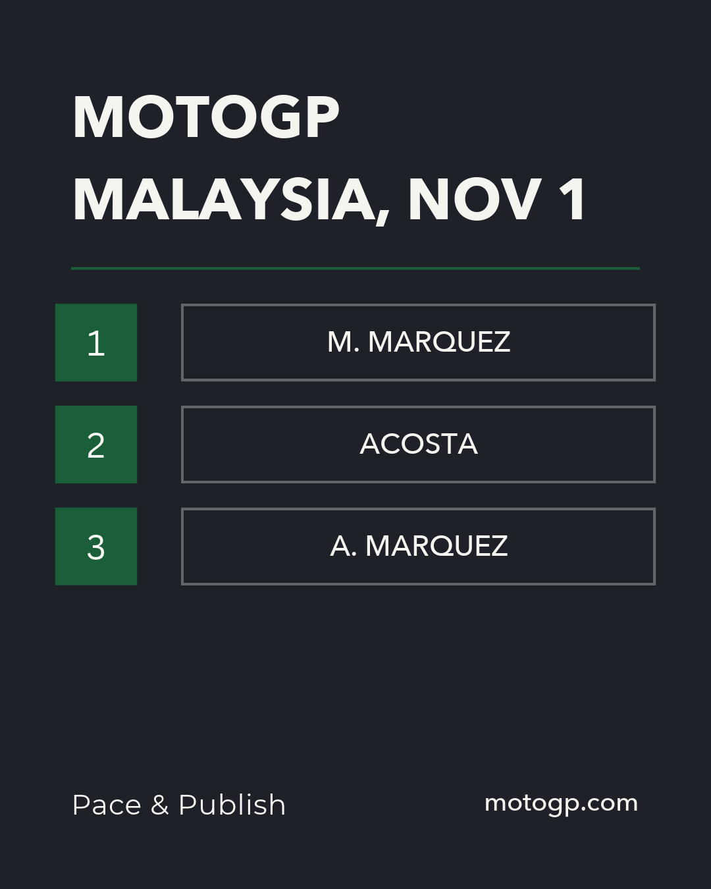
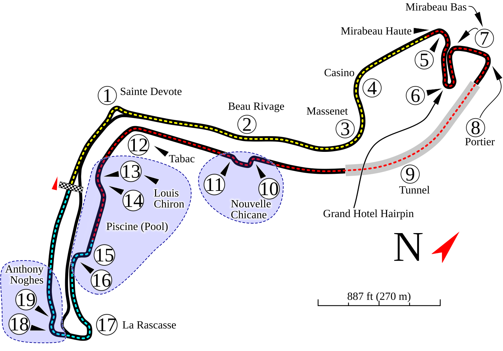

WEC Nov 11, 2026
Bronze-rated drivers can't race in the Hypercar class
CandidateFile photo: 2024 6 Hours of Spa · MarcelX42 · CC BY-SA 4.0

Verified motorsport news in our own words, from every series' official source.
Candidate2024 Dutch GP · Steffen Prößdorf · CC BY-SA 4.0
CandidateFile photo: 2024 6 Hours of Spa · MarcelX42 · CC BY-SA 4.0

CandidateFile photo: Steffen Prößdorf · CC BY-SA 4.0

